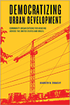

|
America's Vietnam
The Longue Durée of U.S. Literature and Empire
Nguyen, Marguerite
Understanding the literary history of Vietnamese-American encounters and how it shapes our perceptions of war, race, and empire
252 pp • 6x9 • Spring 2018
paper 978-1-4399-1612-4
cloth 978-1-4399-1611-7 |
|
Architectures of Revolt
The Cinematic City circa 1968
Edited by Shiel, Mark
A groundbreaking exploration of how filmmaking, architecture, and urban planning shaped and were shaped by mass protest movements in and around 1968
254 pp • 6x9 • Spring 2018
paper 978-1-4399-1004-7
cloth 978-1-4399-1003-0
|
|
The Burden of Over-representation
Race, Sport, and Philosophy
Farred, Grant
Probing the cultural and philosophical forces at play in three under-regarded moments in sports history
258 pp • 6x9 • Spring 2018
paper 978-1-4399-1143-3
cloth 978-1-4399-1142-6 |
|
Charles E. Hires and the Drink that Wowed a Nation
The Life and Times of a Philadelphia Entrepreneur
Double, Bill
An effervescent biography of Charles Elmer Hires, the Philadelphia pharmacist who introduced root beer to the American public
270 pp • 5.25x8.5 • Spring 2018
paper 978-1-4399-1591-2 |

|
Clowns to the Left of Me, Jokers to the Right
American Life in Columns
Smerconish, Michael A.
With a Foreword by David Axelrod
The opinions—and evolution—of Michael Smerconish, the provocative radio/TV host and political pundit
400 pp • 6x9 • Spring 2018
cloth 978-1-4399-1635-3
|
|
The Collision of Political and Legal Time
Foreign Affairs and the Supreme Court's Transformation of Executive Authority
Fletcher, Kimberley L.
Explores the dynamic institutional relationship that historically exists between the President and the Supreme Court
296 pp • 6x9 • Spring 2018
paper 978-1-4399-1492-2
cloth 978-1-4399-1491-5 |
|
Comic China
Representing Common Ground, 1890–1945
Gan, Wendy
Examining cross-cultural humor and power struggles in Anglo-American representations of China
202 pp • 6x9 • Spring 2018
cloth 978-1-4399-1629-2 |
|
Constructing the Patriarchal City
Gender and the Built Environments of London, Dublin, Toronto, and Chicago, 1870s into the 1940s
Flanagan, Maureen A.
An original, comparative examination of how ideas about gender resulted in the consolidation of the patriarchal city in the Anglo-Atlantic urban world
390 pp • 6x9 • Spring 2018
paper 978-1-4399-1570-7
cloth 978-1-4399-1569-1 |
|
Criminology and Public Policy
Putting Theory to Work
Second Edition
Edited by Decker, Scott H. and Kevin A. Wright
Leading scholars of crime policy address the most critical problems facing the justice system in America
386 pp • 6x9 • Spring 2018
paper 978-1-4399-1658-2
cloth 978-1-4399-1657-5
|
|
Crossing the Border to India
Youth, Migration, and Masculinities in Nepal
Sharma, Jeevan R.
How the changing political economy of rural Nepal informs the desire and agency of young male migrants who seek work in cities
192 pp • 5.25x8.5 • Spring 2018
cloth 978-1-4399-1426-7 |
 |
Democratizing Urban Development
Community Organizations for Housing across the United States and Brazil
Donaghy, Maureen M.
Examining how community organizations fight to prevent displacement and secure affordable housing across cities in the U.S. and Brazil
236 pp • 5.5x8.25 • Spring 2018
paper 978-1-4399-1406-9
cloth 978-1-4399-1405-2 |
|
Fernando Ortiz on Music
Selected Writing on Afro-Cuban Culture
Edited and with an Introduction by Moore, Robin D.
Selections from the influential Fernando Ortiz's publications on Afro-diasporic music and dance—now available in English
294 pp • 6x9 • Spring 2018
cloth 978-1-4399-1173-0 |
|
Healing Our Divided Society
Investing in America Fifty Years after the Kerner Report
Edited by Harris, Fred and Alan Curtis
An Eisenhower Foundation Book
A fiftieth anniversary look back at the Kerner Report
484 pp • 6x9 • Spring 2018
$24.95 paper 978-1-4399-1603-2
cloth 978-1-4399-1602-5 |

|
In Defense of Public Lands
The Case against Privatization and Transfer
Davis, Steven
A comprehensive argument for why public land ought to remain firmly in the public's hands
264 pp • 5.25x8.5 • Spring 2018
paper 978-1-4399-1537-0
cloth 978-1-4399-1536-3
|

|
The Outsider
Albert M. Greenfield and the Fall of the Protestant Establishment
Rottenberg, Dan
The remarkable life of Albert M. Greenfield, a Jewish immigrant whose business empire helped shape Philadelphia and the United States in the twentieth century
New in Paperback!
384 pp • 6x9 • Spring 2018
paper 978-1-4399-0842-6
|
|
Pennsylvania Politics and Policy
A Commonwealth Reader
Volume 1
Edited by Leckrone, J. Wesley and Michelle J. Atherton
An evidence-based exploration of the most important issues in Pennsylvania politics and policy today
236 pp • 6x9 • Spring 2018
paper 978-1-4399-1670-4
|

|
P is for Philadelphia
Korman, Susan
A primer on the City of Brotherly Love, illustrated by the children of Philadelphia, for the children of Philadelphia
Back by Popular Demand!
64 pp • 10x8 • Spring 2018
cloth 978-1-59213-107-5 |
|
The Possessive Investment in Whiteness
How White People Profit from Identity Politics
Twentieth Anniversary Edition
Lipsitz, George
The twentieth anniversary edition of a widely influential book—now updated to address racial privilege in the age of Michael Brown, Freddie Gray, and Donald Trump
378 pp • 6x9 • Spring 2018
paper 978-1-4399-1639-1
cloth 978-1-4399-1638-4
|
|
The Scots Irish of Early Pennsylvania
A Varied People
Ridner, Judith
A comprehensive yet concise early history of the Scots Irish in Pennsylvania
158 pp • 6x9 • Spring 2018
paper 978-1-932304-32-9 |
|
Sinking Chicago
Climate Change and the Remaking of a Flood-Prone Environment
Platt, Harold L.
The first long-term study of the effects of climate change on an American city
304 pp • 6x9 • Spring 2018
paper 978-1-4399-1549-3
cloth 978-1-4399-1548-6 |
|
The Supernatural in Society, Culture, and History
Edited by Waskul, Dennis and Marc Eaton
Demonstrating the value of serious academic inquiry into supernatural beliefs and practices—from ghosts, vampirism, cryptozoology, and dark tourism to tarot cards, fortunetelling, voodoo, and alien abduction
262 pp • 6x9 • Spring 2018
paper 978-1-4399-1525-7
cloth 978-1-4399-1524-0
|
|
Who Will Speak for America?
Edited by Feldman, Stephanie and Nathaniel Popkin
Forty American writers mark a vital new age of protest and possibility
238 pp • 6x9 • Spring 2018
paper 978-1-4399-1624-7 |
|
Wildlife Crime
From Theory to Practice
Edited by Moreto, William D.
A comprehensive theoretical, empirical, methodological, and practical global overview of wildlife crime
330 pp • 6x9 • Spring 2018
paper 978-1-4399-1472-4
cloth 978-1-4399-1471-7 |
|
Youth Who Trade Sex in the U.S.
Intersectionality, Agency, and Vulnerability
Showden, Carisa R. and Samantha Majic
Examining the dominant, unitary "innocent girl–predatory man" policy narrative to improve research, policy, and community interventions for young people in the sex trades
248 pp • 5.5 x 8.25 • Spring 2018
paper 978-1-4399-1621-6
cloth 978-1-4399-1620-9 |
Click here to download the catalog (pdf). |